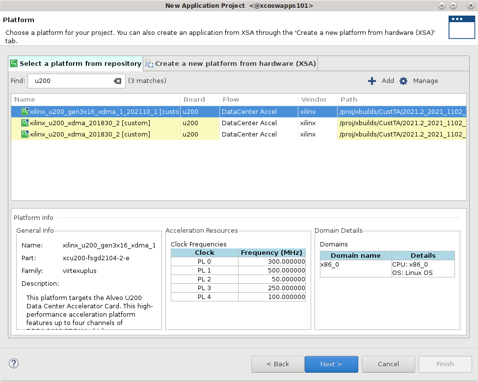
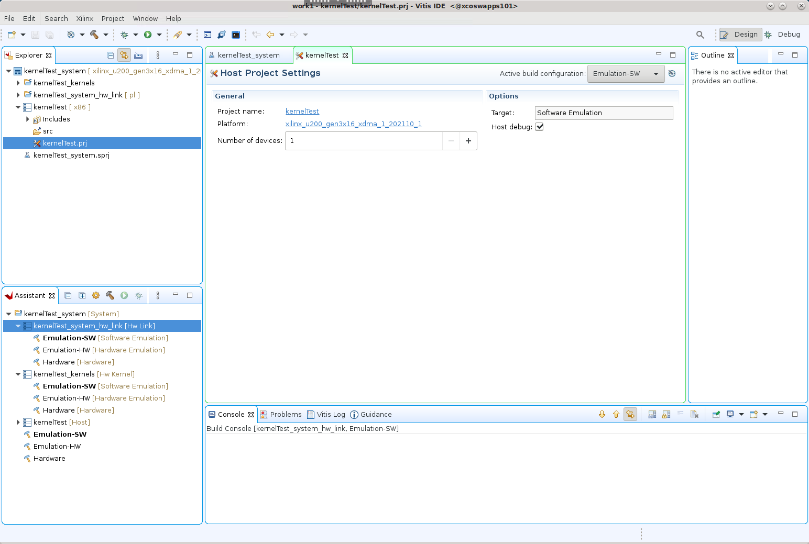

2020.2 Vitis™ アプリケーション アクセラレーション開発フロー チュートリアル2020.1 Vitis アプリケーション アクセラレーション開発フロー チュートリアル |
RTL Kernel ウィザード フロー¶
この演習で説明するプロセスは、『Vitis 統合ソフトウェア プラットフォームの資料』 (UG1416) の RTL Kernel ウィザードに説明されているフローに従っています。
重要: チュートリアルのコマンドを実行する前に、『Vitis 統合ソフトウェア プラットフォームの資料』 (UG1416) のアプリケーション アクセラレーション開発フローの Vitis 環境の設定に説明されているように、次のコマンドを実行してツール環境を設定する必要があります。
#setup Xilinx Vitis tools. XILINX_VITIS and XILINX_VIVADO will be set in this step. source <VITIS_install_path>/settings64.sh #Setup Xilinx runtime. XILINX_XRT will be set in this step. source <XRT_install_path>/setup.sh
cd ./01-rtl_kernel_workflowチュートリアル フォルダーに移動します。Linux ターミナル ウィンドウで
vitisコマンドを入力して Vitis IDE を起動します。
[Workspace Launcher] ダイアログ ボックスが表示されます。

ワークスペースのプロジェクト ディレクトリを選択し、[Launch] をクリックします。
Vitis IDE が開きます。[File] → [New] → [Application Project] をクリックします。
New Application Project ウィザードが開きます。

表示されるプロセスの概要を確認します。[Next] をクリックします。
[Platform] ページが表示されます。
xilinx_u200_xdma_201830_2を選択し、[Next] をクリックします。

[Application Project Details] ページが表示されます。次を選択します。
プロジェクト名 (例:
rtl_ke_t2) を入力します。[Create New System Project] をオンにします。システム プロジェクト名はプロジェクト名から生成されます。これは、必要に応じて変更できます。
プロセッサは、選択したプラットフォームから自動的に選択されます。
[Next] をクリックします。
[Templates] ページが開き、プロジェクトの作成に使用可能なテンプレートがリストされます。
[Empty Application] を選択し、[Finish] をクリックして Vitis アプリケーション プロジェクトを作成します。
New Application Project ウィザードが閉じ、Vitis IDE に新規プロジェクトが読み込まれます。

RTL Kernel ウィザードの設定¶
Vitis IDE のメニュー バーから [Xilinx] → [RTL Kernel Wizard] → [rtl_ke_t2_kernels] をクリックして RTL Kernel ウィザードを起動します。
RTL Kernel ウィザードの Welcome ページが開き、RTL カーネルの定義プロセスの概要が表示されます。このチュートリアルでは、このプロセスに従います。手順を読んで確認し、[Next] をクリックします。
RTL Kernel ウィザードでは、RTL カーネルのインターフェイス機能を指定できます。RTL Kernel ウィザードを使用すると、RTL IP を Vitis IDE でシステムに統合可能な有効なカーネルに確実にパッケージできます。また、RTL IP をカーネルにパッケージするために必要ないくつかのタスクが自動化されます。
RTL Kernel ウィザードは次を生成します。
RTL デザインを Vitis コア開発キット カーネルの XO ファイルとしてパッケージするのに必要な XML ファイル
A[i] = A[i] + 1を実行するサンプル カーネル (RTL コード、テストベンチ、およびホスト コード)カーネル用の Vivado Design Suite プロジェクト
このチュートリアルの後半部分では、このサンプル カーネルを既存の Vector-Accumulate IP に置き換えて、XO ファイルとしてパッケージします。
[General Settings] ページ¶
次の図に示す [General Settings] ページが表示されます。

[Kernel Identification]: IP の VLNV (Vendor:Library:Name:Version) を指定します。カーネル名は、RTL カーネルに使用する IP の最上位モジュール名と同じにする必要があります。
[Kernel Options]: デザイン タイプを指定します。
[RTL] (デフォルト): 関連ファイルを Verilog 形式で生成します。
[Block design]: Vivado ツールの IP インテグレーター用のブロック デザインを生成します。ブロック デザインには、制御レジスタをエミュレートするため、ブロック RAM 交換メモリを使用する MicroBlaze™ サブシステムが含まれます。
[Clock and Reset Options]: カーネルで使用されるクロック数およびカーネルに最上位リセット ポートが必要かどうかを指定します。
次を選択します。
[Kernel name] に
Vadd_A_Bと入力します。[Kernel control interface] で
ap_ctrl_hsを選択します。残りのオプションはデフォルトのままにして、[Next] をクリックします。
[Scalars] ページ¶
スカラー引数は、ホスト アプリケーションからカーネルへ入力パラメーターを渡すために使用されます。指定した [Number of scalar kernel input arguments] の数に応じて、ソフトウェアからハードウェアに引数を渡すための制御レジスタが作成されます。各引数には ID 値が付けられ、ホスト アプリケーションからその引数にアクセスするために使用されます。この ID 値は、ウィザードのサマリ ページに表示されます。
[Argument name]: 引数の名前。
[Argument type]: ネイティブ C/C++ データ型として記述されるスカラー引数型。(u)char、(u)short、(u)int などがあります。
デフォルト値のままにして、[Next] をクリックします。
![[Scalar] ページ](../../../_images/rtl_kernel-scalar_page.png)
[Global Memory] ページ¶
グローバル メモリは、ホストとカーネル間、カーネルとその他のカーネル間で大型のデータ セットを渡すため使用されます。このメモリには、カーネルから AXI4 マスター インターフェイスを介してアクセスできます。AXI4 マスター インターフェイスごとに、インターフェイス名、データ幅、関連する引数の数を指定できます。
[Number of AXI master interfaces]: カーネルの AXI インターフェイス数を指定します。
[AXI master definition]: インターフェイス名、データ幅 (バイト)、各 AXI インターフェイスの引数の数を指定します。
[Argument definition]: 各 AXI インターフェイスに割り当てるポインター引数を指定します。各引数には ID 値が付けられ、ホスト アプリケーションからその引数にアクセスするために使用されます。この ID 値の割り当ては、ウィザードのサマリ ページに表示されます。
![[Global Memory] ページ](../../../_images/rtl_kernel-global_memory.png)
次のように設定します。
Vector-Accumulate カーネルには 2 つの AXI4 インターフェイスがあるので、[Number of AXI master interfaces] は 2 にします。
[AXI master definition] セクションは次のように設定します。
[Interface name] は変更しません。
[Width] は変更しません。
AXI4 インターフェイスはそれぞれ 1 つのポインター引数専用なので、[Number of arguments] は 1 にします。
[Argument definition] セクションの [Argument name] は次のように設定します。
[m00_axi] には
Aと入力します。
データセット A にはこの AXI4 インターフェイスを介してアクセスします。[m01_axi] には
Bと入力します。
データセット B にはこの AXI4 インターフェイスを介してアクセスします。
[Next] をクリックします。
[Streaming Interfaces] ページ¶
このデザインには、デザイン ストリーミング インターフェイスは必要ありません。デフォルト値のままにして、[Next] をクリックします。
[Summary] ページ¶
[Summary] ページには、RTL Kernel ウィザードのさまざまなページで指定した設定のサマリが表示されます。このサマリが正しいことを確認します。
[Target platform]: RTL カーネルがコンパイルされるプラットフォームを表示します。別のプラットフォームがサポートされるようにするには、RTL カーネルをリコンパイルする必要があります。
[Function prototype]: カーネル呼び出しが C 関数でどのように記述されるかを示します。
[Register map]: ホスト ソフトウェア ID、引数名、ハードウェア レジスタ オフセット、データ型、関連する AXI インターフェイス間の関係を表示します。
![[Summary] ページ](../../../_images/rtl_kernel-summary_page.png)
RTL Kernel ウィザードは、[Summary] ページ示される設定を使用して、次を生成します。
カーネル記述 XML ファイル
kernel.xml:/reference-files/src/xmlに含まれ、レジスタ マップなどの Vitis コア開発キットおよびザイリンクス ランタイム (XRT) で必要なカーネルの属性を定義します。A[i]=A[i]+1をインプリメントする VADD というサンプル カーネル。次が含まれます。RTL コード
検証テストベンチ
ホスト コード
VADD サンプルカーネル用の Vivado Design Suite プロジェクト
[OK] をクリックして Vivado Design Suite を起動し、RTL IP をパッケージしてカーネルを作成します。
次の手順¶
次の手順では、RTL デザインを Vivado Design Suite の IP としてパッケージします。
Copyright© 2020 Xilinx
メイン ページに戻る — ハードウェア アクセラレータ チュートリアルの初めに戻る
この資料は 2021 年 2 月 8 日時点の表記バージョンの英語版を翻訳したもので、内容に相違が生じる場合には原文を優先します。資料によっては英語版の更新に対応していないものがあります。 日本語版は参考用としてご使用の上、最新情報につきましては、必ず最新英語版をご参照ください。